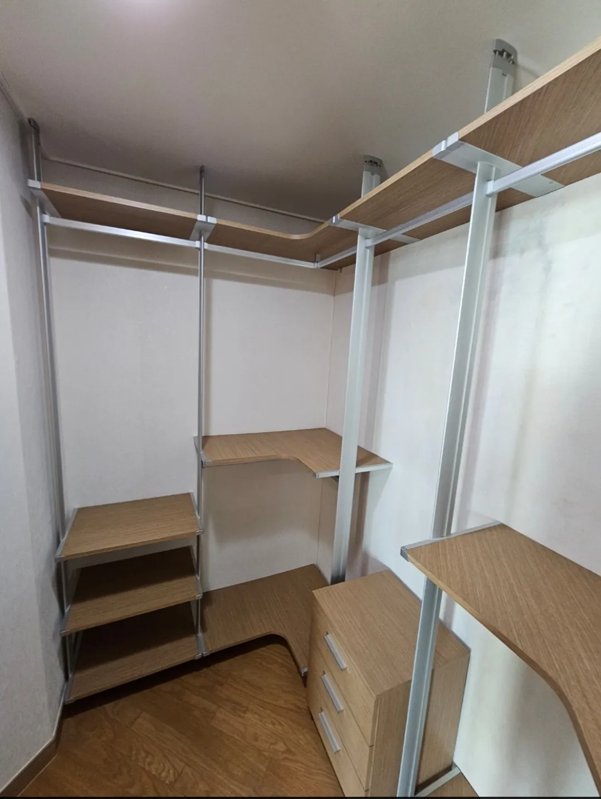

Incheon
인천
시스템행거 이전설치
인천과 서울·경기를 오가는 이사도 한 번에 상담하세요.
인천은 새로 조성된 지역의 고층 아파트와 오래된 주거지가 함께 있어 현장마다 조건 차이가 큽니다. 인천 안에서의 이사뿐 아니라 서울·경기와 인천을 오가는 이사도 거리에 맞춰 일정을 짜야 합니다.
코니처는 인천을 포함한 수도권 현장을 방문해 시스템행거 이전설치를 진행합니다. 두 집 사이 거리를 보고 해체와 설치를 같은 날 할지 나눌지 안내해 드립니다.

Situations
인천 이사에서 자주 있는 경우
인천 안에서 이사
같은 날 해체와 설치를 이어서 진행하는 일정을 짭니다.
서울·경기에서 인천으로
거리를 고려해 일정을 나눌지 정합니다.
고층 아파트
엘리베이터 예약과 긴 폴 운반을 미리 확인합니다.
작은 드레스룸
좁은 공간에 맞게 ㄱ자·일자로 구성을 줄입니다.
Checklist
인천 이사 전에 확인할 것
| 항목 | 확인 내용 | 필요한 이유 |
|---|---|---|
| 출발·도착지 | 두 집의 구·동 | 이동 시간을 계산합니다 |
| 엘리베이터 | 예약 필요 여부 | 운반 시간을 맞춥니다 |
| 드레스룸 크기 | 벽 폭, 천장 높이 | 배치를 정합니다 |
| 이삿짐 일정 | 반출·반입 시간 | 해체·설치 순서를 정합니다 |
| 주차 | 작업 차량 정차 위치 | 운반 동선을 짭니다 |
Process
인천 이전설치 진행 순서
주소·일정 상담
출발지와 도착지, 이사 날짜를 받습니다.
거리·일정 조율
같은 날 진행할지 나눌지 정합니다.
해체
기존 집에서 칸별로 해체합니다.
운반·설치
새 집에 옮겨 설치합니다.
점검
수평과 흔들림을 확인합니다.
FAQ
자주 묻는 질문
인천 어디까지 방문하나요?
인천을 포함한 수도권 지역을 방문합니다. 주소를 알려주시면 방문 가능 여부를 바로 확인해 드립니다.
서울에서 인천으로 이사해도 하루에 되나요?
거리와 이삿짐 일정에 따라 같은 날 가능하기도 하고, 나누는 게 나을 때도 있습니다. 일정을 알려주세요.
새 집 드레스룸이 작아요
칸 수를 줄이거나 ㄱ자로 바꿔 설치할 수 있습니다.
신축 아파트 입주도 되나요?
네, 입주 일정에 맞춰 진행할 수 있습니다.
인천 안에서 이사하면 같은 날 끝나나요?
두 집이 가깝고 이삿짐 일정이 맞으면 같은 날 해체와 설치를 이어서 진행할 수 있습니다.